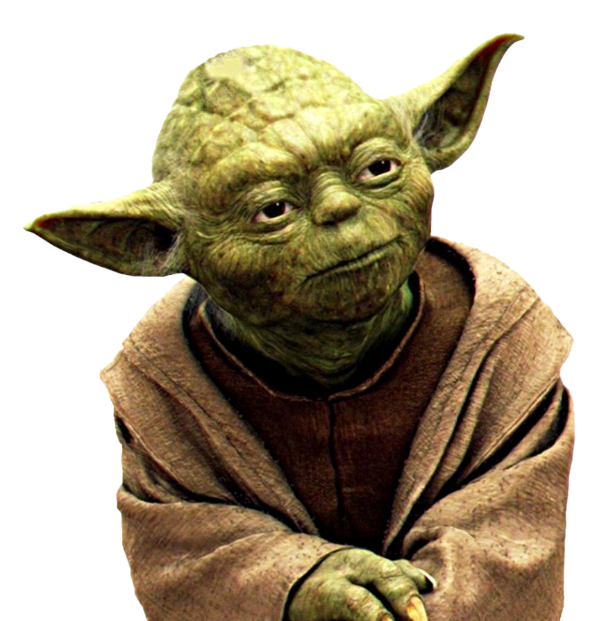

<!DOCTYPE html>

<html>
    <head>
        <meta charset="UTF-8">
        <title>CMSC 437 HW1</title>

        <style>

            /* Watch body */
            .watch{
                width:270px;
                height:210px;
                background:black;
                border:none;
                border-radius:50%;
                position:relative;
            }

            /* Green buttons on the side of watch */
            .button{
                position:absolute;
                width:22px;
                height:34px;
                background:#2faa22;
                border:none;
                border-radius:50%;
                z-index:100;
            }

            /* Left button */
            .left{
                left:8px;
                top:50%;
                transform:translateY(-50%);
            }

            /* Right button */
            .right{
                right:8px;
                top:50%;
                transform:translateY(-50%);
            }

            /* Big clock in the background */
            .clockLarge{
                position:absolute;
                width:200px;
                height:200px;
                background:white;
                border:4px solid black;
                border-radius:50%;
                left:50%;
                top:50%;
                transform:translate(-50%,-50%);
            }

            /* Small clock in the background */
            .clockSmall{
                position:absolute;
                width:90px;
                height:90px;
                background:white;
                border:3px solid black;
                border-radius:50%;
                left:50%;
                top:50%;
                transform:translate(-50%,-50%);
                z-index:5;
            }

            /* General number styling for small and large clocks */
            .number{
                position:absolute;
                font-size:20px;
                font-family:"Times New Roman", serif;
                font-weight:bold;
                z-index:10;
            }

            /* Makes the numbers in the small clock smaller */
            .clockSmall .number{
                font-size:8px;
            }

            /* Hour hand for large clock */
            .handHour{
                position:absolute;
                width:8px;
                height:60px;
                background:black;
                left:50%;
                top:50%;
                transform-origin:50% 100%;
                transform:translate(-50%,-100%) rotate(-20deg);
                border-radius:3px;
            }

            /* Minute hand for lage clock */
            .handMinute{
                position:absolute;
                width:4px;
                height:75px;
                background:black;
                left:50%;
                top:50%;
                transform-origin:50% 100%;
                transform:translate(-50%,-100%) rotate(75deg);
                border-radius:3px;
            }

            /* Second hand for large clock */
            .secondHand{
                position:absolute;
                width:2px;
                height:85px;
                background:red;
                left:50%;
                top:50%;
                transform-origin:50% 100%;
                transform:translate(-50%,-100%) rotate(140deg);
                z-index:15;
            }

            /* Hour hand for small clock */
            .smallHour{
                position:absolute;
                width:3px;
                height:22px;
                background:black;
                left:50%;
                top:50%;
                transform-origin:50% 100%;
                transform:translate(-50%,-100%) rotate(-20deg);
            }

            /* Minute hand for small clock */
            .smallMinute{
                position:absolute;
                width:2px;
                height:30px;
                background:black;
                left:50%;
                top:50%;
                transform-origin:50% 100%;
                transform:translate(-50%,-100%) rotate(75deg);
            }

            /* Second hand for small clock */
            .smallSecond{
                position:absolute;
                width:1px;
                height:38px;
                background:red;
                left:50%;
                top:50%;
                transform-origin:50% 100%;
                transform:translate(-50%,-100%) rotate(140deg);
                z-index:15;
            }
            
            /* Logo for the watch */
            .logo{
                position:absolute;
                width:34px;
                height:34px;
                object-fit:contain;
                left:50%;
                top:50%;
                transform:translate(-50%,-50%);
                z-index:40;
            }

            /* Digital clock centering */
            .digitalPage{
                width:100%;
                height:100%;
                display:flex;
                justify-content:center;
                align-items:center;
            }

            /* Appearance of time text*/
            .digital{
                color:white;
                font-size:32px;
                font-family:"Times New Roman", serif;
                font-weight:bold;
                text-align:center;
            }

            /* Numbers on the clock */
            .n12{ left:50%; top:5%; transform:translate(-50%,-50%); }
            .n1{ left:72%; top:12%; transform:translate(-50%,-50%); }
            .n2{ left:88%; top:28%; transform:translate(-50%,-50%); }
            .n3{ left:95%; top:50%; transform:translate(-50%,-50%); }
            .n4{ left:88%; top:72%; transform:translate(-50%,-50%); }
            .n5{ left:72%; top:88%; transform:translate(-50%,-50%); }
            .n6{ left:50%; top:95%; transform:translate(-50%,-50%); }
            .n7{ left:28%; top:88%; transform:translate(-50%,-50%); }
            .n8{ left:12%; top:72%; transform:translate(-50%,-50%); }
            .n9{ left:5%; top:50%; transform:translate(-50%,-50%); }
            .n10{ left:12%; top:28%; transform:translate(-50%,-50%); }
            .n11{ left:28%; top:12%; transform:translate(-50%,-50%); }
        </style>
    </head>

    <body>
        <div id="root"></div>
        <script src="https://unpkg.com/react@18/umd/react.development.js"></script>
        <script src="https://unpkg.com/react-dom@18/umd/react-dom.development.js"></script>
        <script src="https://unpkg.com/babel-standalone@6.26.0/babel.min.js"></script>

        <script type="text/babel">

            // Creates large analog clock
            function LargeClock() {
                return (
                    <div className="clockLarge">
                        <div className="number n12">12</div>
                        <div className="number n1">1</div>
                        <div className="number n2">2</div>
                        <div className="number n3">3</div>
                        <div className="number n4">4</div>
                        <div className="number n5">5</div>
                        <div className="number n6">6</div>
                        <div className="number n7">7</div>
                        <div className="number n8">8</div>
                        <div className="number n9">9</div>
                        <div className="number n10">10</div>
                        <div className="number n11">11</div>

                        <div className="handHour"></div>
                        <div className="handMinute"></div>
                        <div className="secondHand"></div>
                    </div>
                );
            }

            // Creates small analog clock
            function SmallClock() {
                return (
                    <div className="clockSmall">
                        <div className="number n12">12</div>
                        <div className="number n1">1</div>
                        <div className="number n2">2</div>
                        <div className="number n3">3</div>
                        <div className="number n4">4</div>
                        <div className="number n5">5</div>
                        <div className="number n6">6</div>
                        <div className="number n7">7</div>
                        <div className="number n8">8</div>
                        <div className="number n9">9</div>
                        <div className="number n10">10</div>
                        <div className="number n11">11</div>

                        <div className="smallHour"></div>
                        <div className="smallMinute"></div>
                        <div className="smallSecond"></div>
                    </div>
                );
            }

            // Analog screen of the watch
            function AnalogPage() {
                return (
                    <div>
                        <LargeClock />
                        <SmallClock />
                        
                    </div>
                );
            }

            // Digital screen of the watch
            function DigitalPage() {
                const [time, setTime] = React.useState(new Date());

                // Starts a timer when page loads
                React.useEffect(function() {
                    const timer = setInterval(function() {
                        setTime(new Date());
                    }, 1000);

                    // Stops timer when leaving digital page
                    return function() {
                        clearInterval(timer);
                    };
                }, []);

                return (
                    <div className="digitalPage">
                        <div className="digital">{time.toLocaleTimeString()}</div>
                    </div>
                );
            }

            // Main app that switches between analog and digital
            function App() {
                const [page, setPage] = React.useState("analog");

                function showAnalog() {
                    setPage("analog");
                }

                function showDigital() {
                    setPage("digital");
                }

                // Display which page is currently selected
                const currentPage = 
                    page === "analog" ? <AnalogPage /> : <DigitalPage />;

                return (
                    <div className="watch">
                        {currentPage}
                        
                        {/*Left button goes to analog screen and right goes to digital*/}
                        <button className="button left" onClick={showAnalog}></button>
                        <button className="button right" onClick={showDigital}></button>
                    </div>
                );
            }

            const root = ReactDOM.createRoot(document.getElementById("root"));
            root.render(<App />);
        </script>
    </body>
</html>